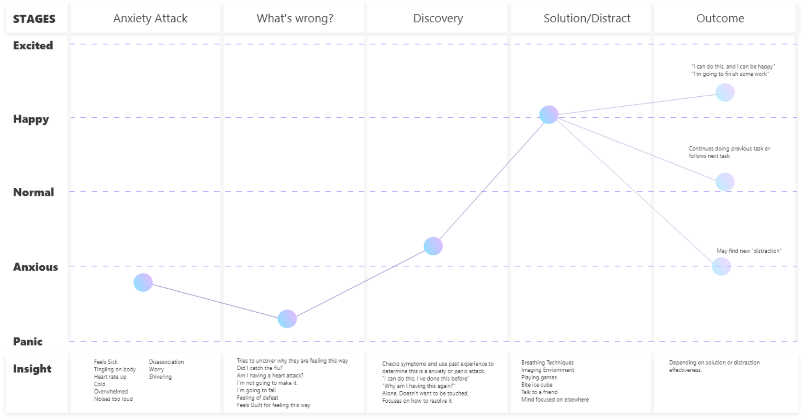

VR Mindfulness for Anxiety
Study on using VR for mindfulness to reduce the effects of anxiety. Theoretical development of a mindfulness VR application. 3 Month Duration & Ongoing. 3 Month Duration & Ongoing
Study on using VR for mindfulness to reduce the effects of anxiety. Theoretical development of a mindfulness VR application. 3 Month Duration & Ongoing. 3 Month Duration & Ongoing
How may we reduce the effects of anxiety and decrease reactiveness to anxiety attack with VR?
I am designing a VR application that will allow 13 - 35 year old individuals with anxiety to practice mindfulness to reduce their reactiveness to anxiety. They will have an interactive immersive VR enviornment depicting a cozy cabin to practice.
• Chronic Worrying or Overthinking
• Motivation to keep good habits
• Trapped Indoors often
• Overwhelmed easily
• Motion Sickness
• Lives in a small space
Target Audience is 13 to 35 year old
individuals with bad anxiety, anxiety attacks,
or GAD (Generalized Anxiety Disorders).
The characteristics they hold normally have:
chronic worrying, overthinking,
a struggle to keep good habits,
often indoors, overwhelmed easily,
holds motion sickness and has a small space.
They are a planner, patience, more introverted
and often seated type of users.
They enjoy warm, cozy spaces with a view filled with
green or plenty of blue. They enjoy neat spaces, and
the sounds of water, fire and instrumental music.
Phase 1 of my primary research had the goal of using
the information received to develop a persona, a Userflow
and have a better understanding of methods and tools to
help Anxiety. I developed a questionnaire with 11
responses on how they are currently helping their
anxiety situation in regards to recovery & prevention.
The image below is organized by
most popular. However, I've discovered many
don't have prevention methods.
Type of the method used for recovery/prevention
and the level of anxiety they experience in daily
life out of 5. Breathing & meditation being most popular
User Journey Map was based on recorded anxiety attacks online.It indicated many individuals aren't at a position to be grabbing a VR head set or do much while experiencing it. Thus, it validates that prevention is the primary focus.
Phase 2: Environment Survey with specific options to narrow down the environment to produce for the prototype including: indoor, outdoor, sounds & color scheme. This also included a prototype to determine a mood board to create the ideal space based on the previous and new research obtained. The prototype was tested with 5 individuals, while the survey up to 12 individuals.
Secondary suggest that mindfulness & meditation is a method to have longer term effects of reducing anxiety and anxiety disorders such as GAD (generalized anxiety disorders) especially if it forms different thinking habits. It can reduce stress reactivity.
VR demographic is the ages of 18 - 35, with a high growth in Canada. It's a 15 billion dollar industry and expected to rise up to 62.5 by 2027.
• Pay attention
• Live in moment
• Accept yourself
• Focus on breathing
• Body scan meditation
• Sitting meditation
1. Build Goal
2. Daily Basis Action to Take
3. Plan when, where, time every week.
4. Every time you encounter time, place, do action
5. Acknowledge it will take 10 weeks to from habit
6. Daily sheet can used to help form habit
Warm Colors = Energizing
Green & Blue = Calming
Brightness & low saturation = Softness
Short wavelengths = calming
Pink = Tranquilizing
Current Market & Demographic
VR demographic is the ages of 18 - 35, with a high growth in Canada.
It's a 15 billion dollar industry and expected to rise up to 62.5
by 2027. The market size for 2020 was 15.8 Billion and is forecast
to reach 62.5 Billion by 2027.
VR & Anxiety has not been explored thoroughly as of yet. However,
there are apps/games currently on Oculus Go and Steam that give a
space to meditate. There is little competition currently, and the
applications are primarily focused on giving different environments
rather than any guide.
The mood board was developed after creating a prototype to determine which images were most resembled calming to the individual. The ideal relaxing space by vote is a cozy cabin environment by the mountain, forest or beach. Indoors was a popular choice, with the most popular style is minimalistic at the same time. Beach, rain, fireplace are the most calming. The color scheme that was deemed most relaxing and calming was often taken by the beach. Warm, lively environments are ideal.
Optimized to have four different spots to practice mindfulness (not including outdoors) It includes a radio, cards to access anxiety reducer mode, clock to change the time, and the windows would be able to change the outdoor environment.
My next steps are creating the model and creating the application using Unity for Oculus Quest. Oculus Quest is currently the best wireless VR headset in the market that doesn't sacrifice on graphic performance as it's competitors.
Why VR?
VR is the known to be highly immersive. There are already many apps
attempting to solve the problem of Anxiety, but one thing can't change
- the person's environment. In some cases, being in a different environment
can change perspective. It's a safe space to practice mindfulness, and
immersive one as that. Mindfulness is continuing to grow as a trend,
as is VR. Especially since many of us are locked up indoors and aren't
able to travel.
Coming from Canada where skies are often grey and the most I can see is flat land in Ontario unless I drive VR. A lot of people associate their room as somewhere safe, and thus, indoor space they have control of is important to include.